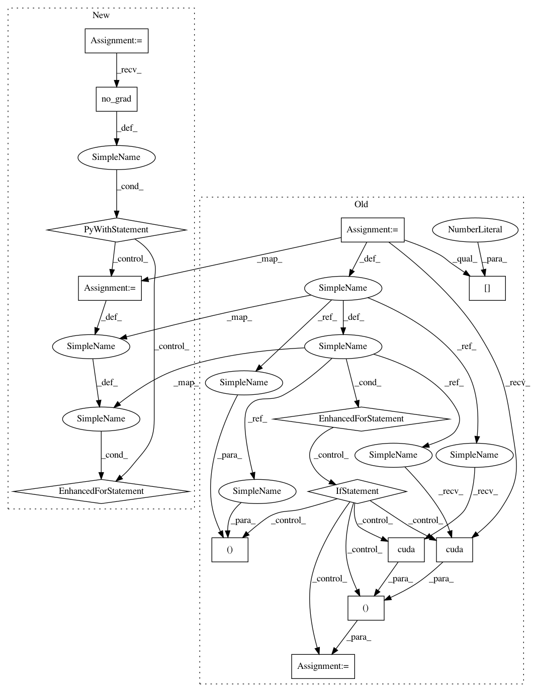

52e09ed9ba6ce987e08334a73a1656792ef7b564,code/deep/DaNN/main.py,,test,#Any#Any#Any#,72
Before Change
total_loss_test = 0
correct = 0
criterion = nn.CrossEntropyLoss()
for batch_id, (data, target) in enumerate(data_tar):
if CUDA:
model = model.cuda()
data, target = data.cuda(), target.cuda()
model.eval()
data, target = Variable(data.view(-1, 28 * 28), volatile=True), Variable(target)
ypred, _, _ = model(data, data)
loss = criterion(ypred, target)
pred = ypred.data.max(1)[1] // get the index of the max log-probability
correct += pred.eq(target.data.view_as(pred)).cpu().sum()
total_loss_test += loss.data[0]
accuracy = correct * 100. / len(data_tar.dataset)
res = "Test: total loss: {:.6f}, correct: [{}/{}], testing accuracy: {:.4f}%".format(
total_loss_test, correct, len(data_tar.dataset), accuracy
)
After Change
total_loss_test = 0
correct = 0
criterion = nn.CrossEntropyLoss()
with torch.no_grad():
for batch_id, (data, target) in enumerate(data_tar):
data, target = data.view(-1,28 * 28).to(DEVICE),target.to(DEVICE)
model.eval()
ypred, _, _ = model(data, data)
loss = criterion(ypred, target)
pred = ypred.data.max(1)[1] // get the index of the max log-probability
correct += pred.eq(target.data.view_as(pred)).cpu().sum()
total_loss_test += loss.data
accuracy = correct * 100. / len(data_tar.dataset)
res = "Test: total loss: {:.6f}, correct: [{}/{}], testing accuracy: {:.4f}%".format(
total_loss_test, correct, len(data_tar.dataset), accuracy
)
tqdm.write(res)
RESULT_TEST.append([e, total_loss_test, accuracy])
log_test.write(res + "\n")
In pattern: SUPERPATTERN
Frequency: 3
Non-data size: 14
Instances
Project Name: jindongwang/transferlearning
Commit Name: 52e09ed9ba6ce987e08334a73a1656792ef7b564
Time: 2018-04-26
Author: jindongwang@outlook.com
File Name: code/deep/DaNN/main.py
Class Name:
Method Name: test
Project Name: pytorch/examples
Commit Name: 645c7c386e62d2fb1d50f4621c1a52645a13869f
Time: 2018-04-24
Author: soumith@gmail.com
File Name: mnist/main.py
Class Name:
Method Name: test
Project Name: pytorch/tutorials
Commit Name: 0ad33d606682537466f3430fc6d6ac7d47460f1a
Time: 2018-04-24
Author: soumith@gmail.com
File Name: intermediate_source/spatial_transformer_tutorial.py
Class Name:
Method Name: test